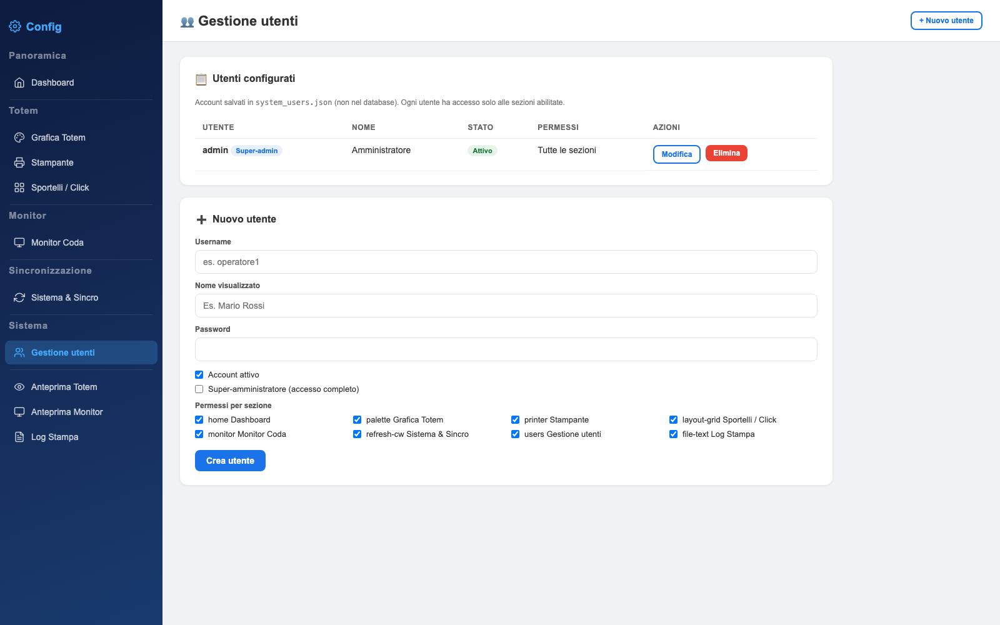

Utenti e permessi
Account separati per ogni persona che entra nel pannello, con visibilità limitata alle sole sezioni di competenza. Gli utenti vivono in un file JSON, non nel database.

Leggere l'elenco
| Colonna | Significato |
|---|---|
| Utente | Username di accesso; il badge Super-admin indica accesso completo |
| Nome | Nome visualizzato, utile quando l'username è tecnico |
| Stato | Attivo o Disattivo: un account disattivo non può fare login |
| Permessi | “Tutte le sezioni” per i super-admin, altrimenti l'elenco delle sezioni abilitate |
| Azioni | Modifica ed eliminazione |
Creare un account
- Apri il form
Il pulsante + Nuovo utente in alto svuota il form in fondo alla pagina.
- Scegli lo username
Solo lettere minuscole, numeri, punto, trattino e underscore; da 3 a 32 caratteri. Per esempio
operatore1om.rossi. Lo username non è modificabile dopo la creazione. - Imposta la password
Minimo 6 caratteri, salvata come hash: nessuno può leggerla dal file.
- Spunta le sezioni
Un operatore di sportello non ha bisogno di Stampante o Versioning: lascia solo Dashboard e le sezioni che usa davvero.
- Crea
Il file viene riscritto subito e l'utente può accedere dalla LAN.
Super-amministratore
Il flag Super-amministratore ignora la griglia dei permessi e apre tutte le sezioni, comprese quelle aggiunte in futuro. Va riservato a una o due persone: se un super-admin perde la password, l'unico recupero è intervenire sul server.
Il sistema impedisce di disattivare o eliminare l'ultimo super-amministratore attivo e di eliminare il proprio account mentre si è connessi. Sono blocchi voluti: senza almeno un super-admin il pannello diventerebbe ingestibile da interfaccia.
Come si combinano i permessi
| Situazione | Cosa vede l'utente |
|---|---|
| Super-admin attivo | Tutto, da qualsiasi postazione della LAN |
| Utente con sole sezioni Totem | Dashboard e le sezioni Totem spuntate; se apre un'altra pagina viene riportato alla prima consentita |
| Utente senza alcuna sezione | Solo la Dashboard, che è visibile a tutti gli utenti attivi |
| Account disattivo | Nessun accesso: il login risponde “Utente o password non corretti” |
Modificare, disattivare, eliminare
- Modifica — cambia nome, password, stato e permessi. Lasciando vuoto il campo password la password attuale resta invariata.
- Disattivazione — è l'opzione giusta per un operatore in ferie o dimissionario: conserva lo storico e blocca l'accesso con un clic.
- Eliminazione — rimuove definitivamente l'account. Usala solo per utenti creati per errore.
Il file degli utenti
{
"version": 1,
"users": [
{
"id": "u_admin",
"username": "admin",
"password_hash": "$2y$10$...",
"name": "Amministratore",
"active": true,
"is_superadmin": true,
"pages": { "dashboard": true, "amministrazione": true, "...": true }
}
]
}system_users.json è escluso dagli aggiornamenti software ma non dai backup: copialo insieme a connect.php e alle configurazioni. Per ripristinare un accesso perso, sostituisci il file con una copia funzionante e ricarica la pagina di login.
linux
Documento statico, consultabile senza connessione